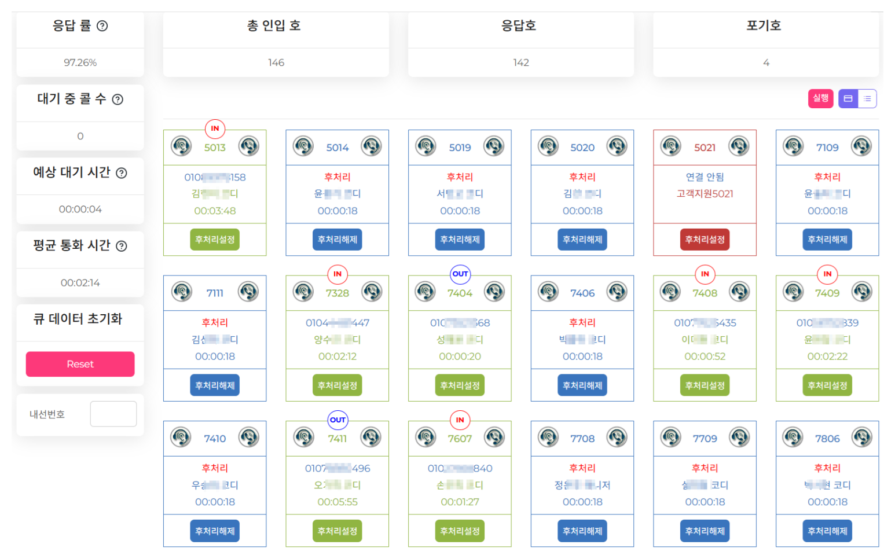

콜센터를 돌리려면 전화를 받고 나누는 IP 교환기, 상담원에게 전화를 배분하는 호분배(ACD), 고객 정보를 띄우는 상담원 화면(CTI), 그리고 녹취와 통계가 필요합니다. 보통은 이것들을 각각 사서 연동합니다. 지오테스는 이 전부를 직접 개발해 한 시스템으로 제공하기 때문에 연동 비용과 기간이 들지 않습니다.
착·발신, 내선, 착신전환, 돌려주기, 당겨받기, 3자통화 등 교환기 기능 전부를 제공합니다.
균등 분배, 스킬별 분배, 대기시간 기준 등 상담 조직에 맞는 방식으로 전화를 나눕니다.
전화가 울리면 고객 정보가 함께 뜹니다. 상담 이력을 보면서 통화합니다.
대기·통화중·후처리·휴식 상태를 한 화면에서 봅니다. 지금 몇 명이 대기 중인지 보입니다.
수신·발신, 일·주·월별, 요일별, 내선별 통계를 뽑습니다.
관리자가 통화를 들으며 상담원에게만 들리는 안내를 넣을 수 있습니다. 신입 교육에 씁니다.
지금 몇 통이 대기 중인지 보입니다

실제 사용 화면입니다. 표시 항목과 배치는 조직에 맞게 조정합니다.
대기 전화가 쌓이는 순간이 바로 보입니다. 이 숫자가 올라가면 그 시간대에 사람이 부족하다는 뜻입니다.
받은 전화만 세면 잘 돌아가는 것처럼 보입니다. 놓친 전화를 같이 봐야 실제 상태가 나옵니다.
관리자가 자리를 돌아다니며 확인하지 않아도 됩니다. 재택으로 일해도 사무실에서 볼 때와 똑같이 보입니다.
전화가 밀리는지 아닌지를 감으로 압니다. "오늘 좀 바빴다" 말고는 남는 기록이 없습니다.
몇 시에 몇 통이 밀렸는지가 숫자로 남습니다. 사람을 더 뽑을지, 자동 응대를 넣을지 판단할 근거가 생깁니다.
전화를 누가 받을지 사람이 정하고 있다면 분배 규칙이 필요한 시점입니다.
본사와 지점 전화를 하나의 번호 체계로 묶습니다.
사무실 밖에서도 같은 내선과 같은 화면을 씁니다.